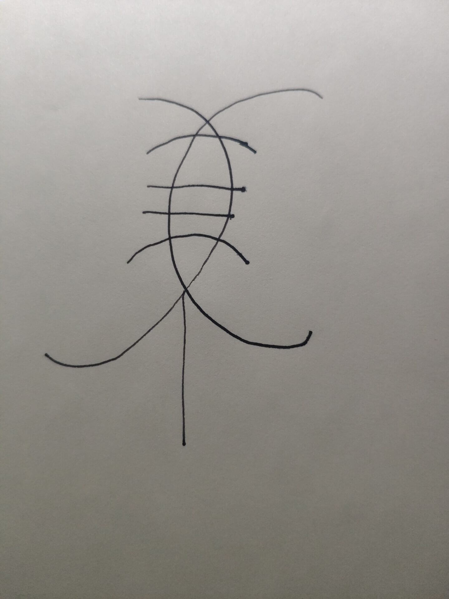
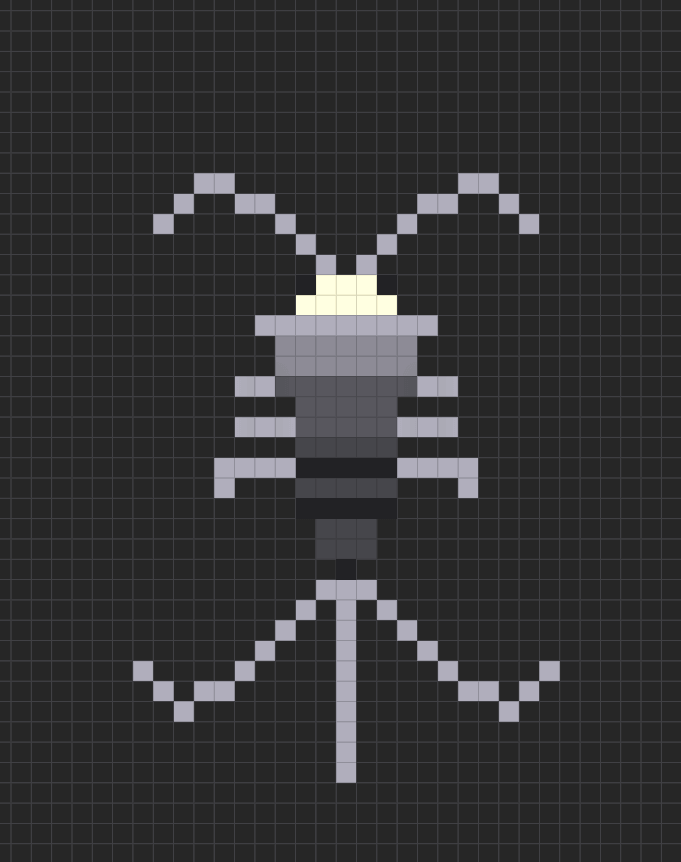

——I Need Healing!
稍微尝试了下制作一个logo,比我想得要难得多.
其实我的灵感来源于一种虫子:白鱼可以放心大胆点进去,这个虫子看起来没啥攻击力(x
然后我尝试简笔画了有一下
再然后尝试了像素画
最后尝试了JS的画布
代码大概是这个:
logo.jsview rawvar canvas = document.getElementById("canvas"); var context = canvas.getContext("2d"); //2d用单引用括起来 //获取图像的数据URL var imgURL = canvas.toDataURL("image/png"); //默认图片格式为png，也可以自定义设置格式。 //显示图片 var image = document.createElement("img"); //添加一个img元素 image.src = imgURL; //将获取的图像的URL赋值给src属性 document.body.appendChild(image); //将元素添加到页面中 context.lineWidth = 12; context.strokeRect(128, 128, 256, 256); //用指定的颜色填充矩 let mix = 100; let topp = 240; let start = 5.3; let end = 1.4; context.beginPath(); context.arc(256 - mix, topp, 120, start, 2 * Math.PI + end, false); context.strokeStyle = "black"; context.stroke(); context.beginPath(); context.arc(256 + mix, topp, 120, Math.PI - end, 3 * Math.PI - start, false); context.strokeStyle = "black"; context.stroke(); context.beginPath(); context.moveTo(256, 308); //画线的起点 context.lineTo(256, 374); //终点 context.closePath(); context.strokeStyle = "black"; context.stroke(); context.beginPath(); context.moveTo(210, 230); //画线的起点 context.lineTo(302, 230); //终点 context.closePath(); context.strokeStyle = "black"; context.stroke(); let foot1 = 4.4; context.beginPath(); context.arc(256, 90, 120, Math.PI + foot1, 2 * Math.PI - foot1, false); context.strokeStyle = "black"; context.stroke(); let foot3 = 0.8; context.beginPath(); context.arc(256, 330, 80, Math.PI + foot3, 2 * Math.PI - foot3, false); context.strokeStyle = "black"; context.stroke();
效果如图所示
效果实在是谈不上好,并且缩小之后会更加难看
最终我决定把简单点,直接打开PS,选了个好看的字体,然后直接使用字体图标,就这样,我觉得还挺不错的.
也就是你现在看到的网页标签栏左上角的那个.
最后,我还折腾了一下主题的tag,只能说,面对一些不熟悉的东西,非常容易因为弄错一个标点符号,而折腾半天(编辑器提示?不存在的啊)
无雨啊,还任重而道远啊,还有很大的优化空间.先这样,休息了.肩膀疼.